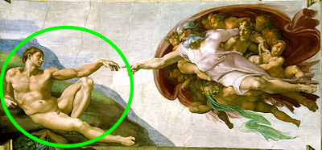

γραφὴ ζῶσα
Lesson 1

Copyright 2017 by Jonathan Robie (@bibhumanities) and Micheal Palmer (@grklinguist).
This work is licensed under a Creative Commons Attribution-ShareAlike 4.0 International License.
Greek Language
Γλῶσσα Ἑλληνική
Lesson objectives
- Yes, no (ναί, οὔ)
- Questions using "or" (ἤ)
- Questions using "who" (τίς)
- Basic understanding of John 1:1-2 (relax, you won't understand it at first, our job is to teach this).
- You will be swimming in Greek that you don't understand ... don't worry about it, you are only responsible for the things listed above.
👍 ναί
👎 οὔ
👍 ναί
👎 οὔ
👎
οὔ!
👍
ναί!
👍
ναί!
👎
οὔ!
ἤ
👍 ναὶ ἢ οὔ;
ναί!
👎 ναὶ ἢ οὔ;
οὔ!
👩
Μαρία
👨
Ἰωάνης
👫 τίς;
👨 τίς;
Μαρία ἢ Ἰωάνης;
Ἰωάνης
👩 τίς;
Μαρία ἢ Ἰωάνης;
Μαρία
👩 τίς;
Μαρία
👨 τίς;
Ἰωάνης
John 1:1-2
Κατά Ιωάννην 1:1-2
Ἐν ἀρχῇ ἦν ὁ λόγος,
καὶ ὁ λόγος ἦν πρὸς τὸν θεόν,
καὶ θεὸς ἦν ὁ λόγος.
οὗτος ἦν ἐν ἀρχῇ πρὸς τὸν θεόν.
Ἐν ἀρχῇ ἦν ὁ λόγος
Ἐν
Ἐν

Ἐν ἀρχῇ ἦν ὁ λόγος
ἀρχῇ
ἡ ἀρχή

ἡ ἀρχή, ἡ τελευτή

ἡ ἀρχή, ἡ τελευτή

ἀρχή ἢ τελευτή;

ἀρχή ἢ τελευτή;

Ἐν τελευτῇ
Ἐν ἀρχῇ
Ἐν ἀρχῇ ἦν ὁ λόγος
ἦν
ἦν
ἦν = "was"
Ἐν ἀρχῇ ἦν ὁ λόγος
Ἐν ἀρχῇ ἦν ὁ λόγος
ὁ λόγος
ὁ λόγος
نمستے
ὁ λόγος
Слухаю
ὁ λόγος
喂
οἱ λόγοι

Ἐν ἀρχῇ ἦν ὁ λόγος
👫 τίς ἦν ἐν ἀρχῇ;
ὁ λόγος ἦν ἐν ἀρχῇ.
Ἐν ἀρχῇ ἦν ὁ λόγος,
καὶ ὁ λόγος ἦν πρὸς τὸν θεόν,
καὶ ὁ λόγος ἦν πρὸς τὸν θεόν
καί
1 + 1
καὶ ὁ λόγος ἦν πρὸς τὸν θεόν
θεός
ὁ θεός
👫 τίς;
θεὸς ἢ ἄνθρωπος;
θεὸς ἢ ἄνθρωπος;

καὶ ὁ λόγος ἦν πρὸς τὸν θεόν
πρὸς τὸν θεόν
πρός

ὀπίσω

καὶ ὁ λόγος ἦν πρὸς τὸν θεόν
τίς ἦν πρὸς τὸν θεόν;
ὁ λόγος ἦν πρὸς τὸν θεόν.
👫 πρὸς τίνα;
| τίς; | πρὸς τίνα; |
|---|---|
| ὁ λόγος | πρὸς τὸν λόγον |
| ὁ θεός | πρὸς τὸν θεόν |
| ἐγώ | πρὸς με |
| σύ | πρὸς σε |
καὶ ὁ λόγος ἦν πρὸς τὸν θεόν
πρὸς τίνα ἦν ὁ λόγος;
πρὸς τὸν θεόν ἦν ὁ λόγος.
Ἐν ἀρχῇ ἦν ὁ λόγος,
καὶ ὁ λόγος ἦν πρὸς τὸν θεόν,
καὶ θεὸς ἦν ὁ λόγος.
καὶ θεὸς ἦν ὁ λόγος.
τίς ἦν ὁ λόγος;
θεὸς ἦν ὁ λόγος.
καὶ θεὸς ἦν ὁ λόγος.
τίς ἦν θεὸς;
ὁ λόγος ἦν θεὸς.
Ἐν ἀρχῇ ἦν ὁ λόγος,
καὶ ὁ λόγος ἦν πρὸς τὸν θεόν,
καὶ θεὸς ἦν ὁ λόγος.
οὗτος ἦν ἐν ἀρχῇ πρὸς τὸν θεόν.
οὗτος ἦν ἐν ἀρχῇ πρὸς τὸν θεόν.
οὗτος
οὗτος

οὗτος ἦν ἐν ἀρχῇ πρὸς τὸν θεόν.
τίς ἦν ἐν ἀρχῇ πρὸς τὸν θεόν;
οὗτος ἦν ἐν ἀρχῇ πρὸς τὸν θεόν.
ὁ λόγος ἦν ἐν ἀρχῇ πρὸς τὸν θεόν.
οὗτος ἦν ὁ λόγος.
οὗτος ἦν ἐν ἀρχῇ πρὸς τὸν θεόν.
πρὸς τίνα ἦν οὗτος ἐν ἀρχῇ;
πρὸς τὸν θεόν ἦν οὗτος ἐν ἀρχῇ.
🕝 πότε;
οὗτος ἦν ἐν ἀρχῇ πρὸς τὸν θεόν.
πότε ἦν οὗτος πρὸς τὸν θεόν;
ἐν ἀρχῇ ἦν οὗτος πρὸς τὸν θεόν.
κατέλαβες;

Ἐν ἀρχῇ ἦν ὁ λόγος,
καὶ ὁ λόγος ἦν πρὸς τὸν θεόν,
καὶ θεὸς ἦν ὁ λόγος.
οὗτος ἦν ἐν ἀρχῇ πρὸς τὸν θεόν.